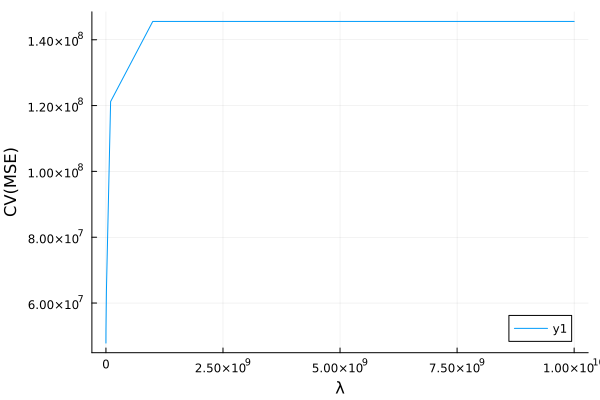
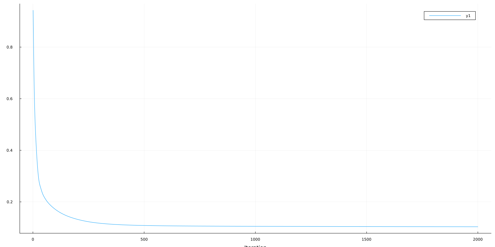
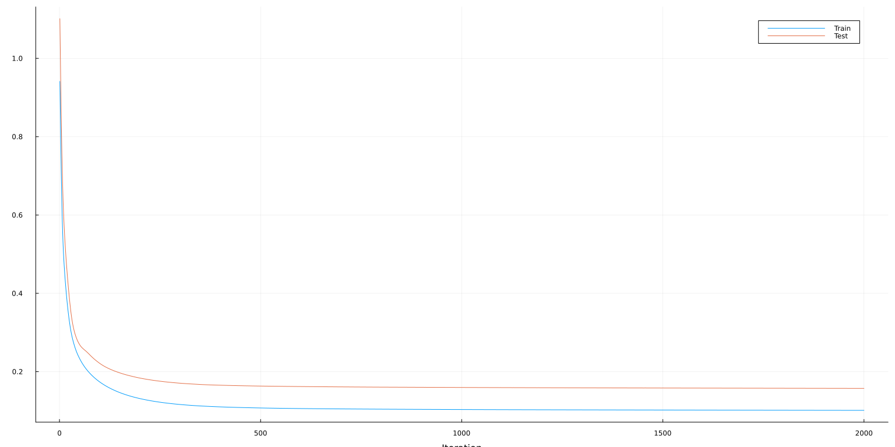
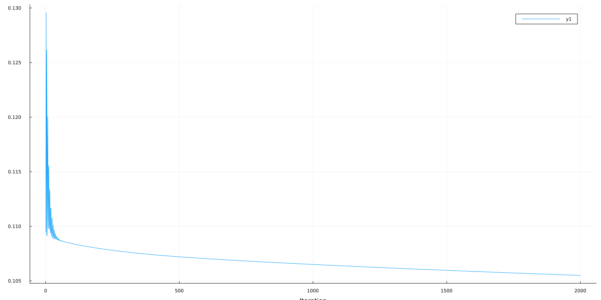
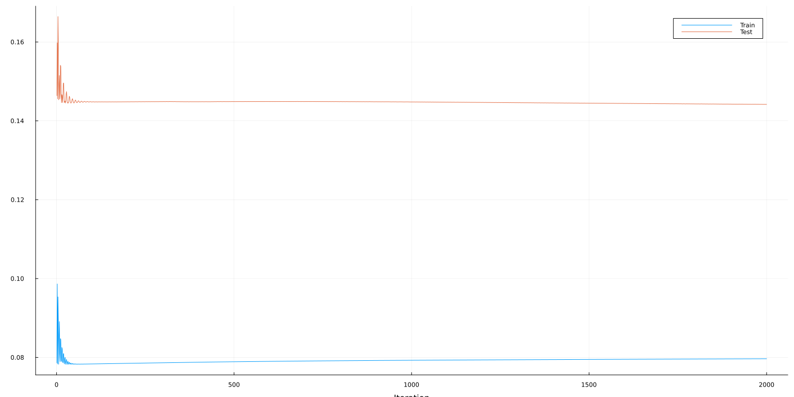

This work is licensed under a Creative Commons Attribution-ShareAlike 4.0 International License
About this document¶
This document was created using Weave.jl. The code is available in on github. The same document generates both static webpages and associated jupyter notebook.
Introduction¶
This document is a companion to my “Machine learning in economics”. Those notes discuss the recent use of machine learning in economics, with a focus on lasso and random forests. The code in those notes is written in R. This document will look at similar code in Julia.
RCall¶
If you want to use the methods of Chernozhukov and coauthors implements
in the R packaga @hdm or the methods of Athey and coauthors implemented
in the R package @grf , then it makes sense to use the R pacakge. You
could simply write all your code in R. However, if you prefer using
Julia, you can just call the necessary R functions with
RCall.jl.
Here, we load the pipeline data used in the machine learning methods notes, and do some cleaning in Julia.
using RCall, DataFrames, Missings, Statistics
R"load(paste($(docdir),\"/rmd/pipelines.Rdata\",sep=\"\"))"
println(R"ls()")
data = @rget data # data on left is new Julia variable, data on right is the one in R
println(R"summary(data[,1:5])")
println(describe(data[:,1:5]))
for c in 59:107 # columns of state mileage, want missing->0
replace!(x->(ismissing(x) || isnan(x)) ? 0.0 : x, data[!,c])
end
println(describe(data[:,59:65]))
RObject{StrSxp}
[1] "#JL" "data"
RObject{StrSxp}
respondent_id report_yr report_prd major
Min. : 1.0 Min. :1991 Min. :12 Mode :logical
1st Qu.: 64.0 1st Qu.:1997 1st Qu.:12 FALSE:1192
Median :148.0 Median :2003 Median :12 TRUE :2797
Mean :184.3 Mean :2003 Mean :12 NA's :2180
3rd Qu.:214.0 3rd Qu.:2010 3rd Qu.:12
Max. :745.0 Max. :2016 Max. :12
NA's :3371
respondent_name
Centra Pipelines Minnesota Inc. : 22
Tuscarora Gas Transmission Company : 22
Eastern Shore Natural Gas Company : 22
Kern River Gas Transmission Company : 21
National Fuel Gas Supply Corporation: 21
(Other) :2938
NA's :3123
5×7 DataFrame
Row │ variable mean min median max nmissing eltype
│ Symbol Union… Any Union… Any Int64 Type
─────┼──────────────────────────────────────────────────────────────────────────────────────────────────────────────────────────────────────────────────────
1 │ respondent_id 184.3 1 148.0 745 0 Int64
2 │ report_yr 2003.49 1991 2003.0 2016 0 Int64
3 │ report_prd 12.0 12 12.0 12 3371 Union{Missing, Int64}
4 │ major 0.701178 false 1.0 true 2180 Union{Missing, Bool}
5 │ respondent_name Algonquin Gas Transmission Compa… Southern Natural Gas Company … 3123 Union{Missing, CategoricalValue{…
7×7 DataFrame
Row │ variable mean min median max nmissing eltype
│ Symbol Float64 Float64 Float64 Float64 Int64 Union
─────┼───────────────────────────────────────────────────────────────────────────────────────────
1 │ North Carolina 0.00358525 0.0 0.0 1.0 0 Union{Missing, Float64}
2 │ Tennessee 0.0061488 0.0 0.0 0.635202 0 Union{Missing, Float64}
3 │ Virginia 0.00552028 0.0 0.0 1.0 0 Union{Missing, Float64}
4 │ Illinois 0.0134891 0.0 0.0 1.0 0 Union{Missing, Float64}
5 │ Indiana 0.0058707 0.0 0.0 0.550302 0 Union{Missing, Float64}
6 │ Kentucky 0.0133474 0.0 0.0 1.0 0 Union{Missing, Float64}
7 │ Gulf of Mexico 0.0140981 0.0 0.0 0.825409 0 Union{Missing, Float64}
Suppose we want to estimate the coefficient on transPlant (capital) in
a partially linear model with transProfit (profit) as the outcome.
This can be done with the R function hdm::rlassoEffects.
R"library(hdm)"
completedata = dropmissing(data,[1:10..., 59:122...], disallowmissing=true)
y = completedata[!,:transProfit]
inc = .!isnan.(y)
y = y[inc]
X = completedata[inc,[6:7..., 59:121...]]
cols = [std(X[!,c])>0 for c in 1:ncol(X)]
X = X[:,cols]
est = R"rlassoEffects($(X), $(y), index=c(1:2))"
R"summary($est)"
RObject{VecSxp}
[1] "Estimates and significance testing of the effect of target variables"
Estimate. Std. Error t value Pr(>|t|)
transPlant_bal_end_yr 0.034434 0.008878 3.879 0.000105 ***
transPlant_bal_beg_yr 0.086580 0.009383 9.228 < 2e-16 ***
---
Signif. codes: 0 ‘***’ 0.001 ‘**’ 0.01 ‘*’ 0.05 ‘.’ 0.1 ‘ ’ 1
MLJ.jl¶
MLJ.jl is a machine
learning framework for Julia. It gives a unified interface for many
machine learning algorithms and tasks. Similar R packages include
caret and MLR. scikit-learn is
a similar Python package.
For more information on MLJ see
You can see a list of models registered to work with MLJ.jl on
github,
or by calling MLJ::models().
using MLJ
models()
239-element Vector{NamedTuple{(:name, :package_name, :is_supervised, :abstr
act_type, :constructor, :deep_properties, :docstring, :fit_data_scitype, :h
uman_name, :hyperparameter_ranges, :hyperparameter_types, :hyperparameters,
:implemented_methods, :inverse_transform_scitype, :is_pure_julia, :is_wrap
per, :iteration_parameter, :load_path, :package_license, :package_url, :pac
kage_uuid, :predict_scitype, :prediction_type, :reporting_operations, :repo
rts_feature_importances, :supports_class_weights, :supports_online, :suppor
ts_training_losses, :supports_weights, :tags, :target_in_fit, :transform_sc
itype, :input_scitype, :target_scitype, :output_scitype)}}:
(name = ABODDetector, package_name = OutlierDetectionNeighbors, ... )
(name = ABODDetector, package_name = OutlierDetectionPython, ... )
(name = ARDRegressor, package_name = MLJScikitLearnInterface, ... )
(name = AdaBoostClassifier, package_name = MLJScikitLearnInterface, ... )
(name = AdaBoostRegressor, package_name = MLJScikitLearnInterface, ... )
(name = AdaBoostStumpClassifier, package_name = DecisionTree, ... )
(name = AffinityPropagation, package_name = Clustering, ... )
(name = AffinityPropagation, package_name = MLJScikitLearnInterface, ... )
(name = AgglomerativeClustering, package_name = MLJScikitLearnInterface, .
.. )
(name = AutoEncoder, package_name = BetaML, ... )
⋮
(name = TomekUndersampler, package_name = Imbalance, ... )
(name = UnivariateBoxCoxTransformer, package_name = MLJTransforms, ... )
(name = UnivariateDiscretizer, package_name = MLJTransforms, ... )
(name = UnivariateFillImputer, package_name = MLJTransforms, ... )
(name = UnivariateStandardizer, package_name = MLJTransforms, ... )
(name = UnivariateTimeTypeToContinuous, package_name = MLJTransforms, ...
)
(name = XGBoostClassifier, package_name = XGBoost, ... )
(name = XGBoostCount, package_name = XGBoost, ... )
(name = XGBoostRegressor, package_name = XGBoost, ... )
To use these models, you need the corresponding package to be installed
and loaded. The @load macro will load the needed package(s) for any
model.
Lasso = @load LassoRegressor pkg=MLJLinearModels
import MLJLinearModels ✔
MLJLinearModels.LassoRegressor
Let’s fit lasso to the same pipeline data as above.
lasso = machine(Lasso(lambda=1.0), X, y)
train,test = partition(eachindex(y), 0.6, shuffle=true)
fit!(lasso, rows=train)
yhat = predict(lasso, rows=test)
println(yhat[1:10])
println("MSE/var(y) = $(mean((y[test].-yhat).^2)/var(y[test]))")
[0.0, 0.0, 0.0, 0.0, 0.0, 0.0, 0.0, 0.0, 0.0, 0.0]
MSE/var(y) = 1.4366160320048598
That doesn’t look very good. All the predictions are zero. This could
happen when the regularization parameter, lambda, is too large.
However, in this case the problem is something else. The warning
messages indicate numeric problems when minimizing the lasso objective
function. This can happen when X is poorly scaled. The algorithm used
to compute the lasso estimates works best when the coefficients are all
roughly the same scale. The existing X’s have wildly different scales,
which causes problems. This situation is common, so MLJ.jl has
functions to standardize variables. It is likely that the hdm package
in R does something similar internally.
lasso_stdx = Pipeline(Standardizer(),
Lasso(lambda=1.0*std(y[train]),
solver=MLJLinearModels.ISTA(max_iter=10000))
)
m = machine(lasso_stdx, X, y)
fit!(m, rows=train, force=true)
yhat = predict(m , rows=test)
println("MSE/var(y) = $(mean((y[test].-yhat).^2)/var(y[test]))")
# Get the fitted coefficients
coef = fitted_params(m).lasso_regressor.coefs
intercept = fitted_params(m).lasso_regressor.intercept
sum(abs(c[2])>1e-8 for c in coef) # number non-zero
MSE/var(y) = 0.9983619913286683
0
If we want to tune lambda using cross-validation, we can use the
range and TunedModel functions.
r = range(lasso_stdx, :(lasso_regressor.lambda), lower=1e1, upper=1e10, scale=:log)
t=TunedModel(model=lasso_stdx,
resampling=CV(nfolds=5),
tuning=Grid(resolution=10),
ranges=r,
measure=rms)
m = machine(t, X, y)
fit!(m, rows=train, verbosity=1)
yhat = predict(m , rows=test)
println("MSE/var(y) = $(mean((y[test].-yhat).^2)/var(y[test]))")
MSE/var(y) = 0.13334865746257765
using Plots
cvmse = report(m).plotting.measurements
λ = Float64.(report(m).plotting.parameter_values[:])
s = sortperm(λ)
plot(λ[s], cvmse[s], xlab="λ", ylab="CV(MSE)")

Flux.jl¶
Flux.jl is another Julia package
for machine learning. It seems to be emerging as the leading Julia
package for neural networks and deep learning, but other machine
learning models can also be implemented using Flux.jl.
Let’s create a lasso model in Flux.jl.
using Flux, LinearAlgebra
# Scale the variables
Xstd = Flux.normalise(Matrix(X), dims=1)
X_train = Xstd[train,:]
X_test = Xstd[test,:]
yscale = std(y[train])
ymean = mean(y[train])
ystd = (y .- ymean)./yscale
y_train = ystd[train]
y_test = ystd[test]
# Set up the model parameters and initial values
βols = (X_train'*X_train) \ (X_train'*(y_train .- mean(y_train)))
β = zeros(ncol(X))
b = mean(y_train)
# Define the loss function
ψ = ones(length(β))
λ = 2.0
mutable struct LinearModel
β::Vector{Float64}
b::Float64
end
pred(m::LinearModel,x) = m.b .+ x*m.β
mse(m::LinearModel,x,y) = mean( (pred(m,x) .- y).^2 )
penalty(m::LinearModel,y) = λ/length(y)*norm(ψ.*m.β,1)
loss(m::LinearModel,x,y) = mse(m,x,y) + penalty(m,y)
m = LinearModel(β,b)
@show loss(m,X_train,y_train)
# minimize loss
maxiter=2000
obj = zeros(maxiter)
mse_train = zeros(maxiter)
mse_test = zeros(maxiter)
opt = Flux.setup(Flux.AMSGrad(), m)
import ProgressMeter: @showprogress
@showprogress for i in 1:maxiter
Flux.train!(loss, m, [(X_train, y_train)], opt)
mse_train[i] = mse(m,X_train,y_train)
mse_test[i] = mse(m,X_test, y_test)
obj[i] = loss(m,X_train,y_train)
end
lo = 1
hi = 2000
plot(obj[lo:hi], ylab="Loss=MSE + λ/n*||β||₁", xlab="Iteration")
loss(m, X_train, y_train) = 0.9986320109439123

plot(lo:hi, [mse_train[lo:hi] mse_test[lo:hi]], ylab="MSE", xaxis=("Iteration"), lab=["Train" "Test"])

The minimization methods in Flux.train! are all variants of gradient
descent. Each call to Flux.train! runs one iteration of the specified
solver. To find a local minimum, Flux.train! can be called repeatedly
until progress stops. The above loop is a simple way to do this. The
@epoch macro can also be useful.
Gradient descent works well for neural networks, but is not ideal for Lasso. Without further adjustment, gradient descent gets stuck in a cycle as jumps from one side of the other of the absolute value in the lasso penalty. Nonetheless, the results are near the true minimum, even though it never exactly gets there.
Lux.jl¶
A promising alternative to Flux.jl is
Lux.jl.1 Lux.jl and Flux.jl
share many features and backend code. Lux.jl has a more function
focused interface with explicit parameter passing. This is a more
“Julian” style of programming.2
For comparison, let’s implement the same Lasso model in Lux.
import Lux # Lux shares many function names with Flux, so import instead of using to avoid confusion
import Random, Zygote
using Test
# Seeding
rng = Random.default_rng()
Random.seed!(rng, 0)
# define the model
X_train = Matrix(X)[train,:]
X_test = Matrix(X)[test,:]
y_train = y[train]
y_test = y[test]
function standardizer(xtrain)
m = std(xtrain, dims=1)
s = std(xtrain, dims=1)
(x->(x .- m)./s , xs->xs.*s .+ m)
end
stdizex, _ = standardizer(X_train)
stdizey, unstdizey = standardizer(y_train)
@test unstdizey(stdizey(y_test)) ≈ y_test
ys = stdizey(y_train)
Xs = stdizex(X_train)
# Set up the model parameters and initial values
βols = (Xs'*Xs) \ (Xs'*(ys .- mean(ys)))
b = [mean(ys)]
m = Lux.Chain(X->stdizex(X)',
Lux.Dense(size(X_train,2), 1)
)
ps, st = Lux.setup(rng, m)
ps.layer_2.weight .= βols'
ps.layer_2.bias .= b
mse(m, ps, st, X, y) = mean(abs2, m(X, ps, st)[1]' .- stdizey(y))
mseraw(m,ps,st,X,y) = mean(abs2, unstdizey(m(X, ps, st)[1]') .- y)
ℓ = let λ = 2.0, ψ = ones(size(βols')), st=st
penalty(ps,y) = λ/length(y)*norm(ψ.*ps.layer_2.weight,1)
loss(ps, X, y, m) = mse(m, ps, st, X, y) + penalty(ps,y)
end
@show ℓ(ps,X_train,y_train,m)
# minimize loss
import Optimisers
function train_model(m, initial_params, st; maxiter=2000)
opt = Optimisers.AMSGrad()
ps = initial_params
optstate = Optimisers.setup(opt, ps)
obj = zeros(maxiter)
mse_train = zeros(maxiter)
mse_test = zeros(maxiter)
@showprogress for i in 1:maxiter
# Compute the gradient
gs = Zygote.gradient(ps->ℓ(ps, X_train, y_train, m), ps)[1]
# Perform parameter update
optstate, ps = Optimisers.update(optstate, ps, gs)
mse_train[i] = mse(m, ps, st, X_train,y_train)
mse_test[i] = mse(m, ps, st, X_test, y_test)
obj[i] = ℓ(ps,X_train,y_train,m)
end
return(ps, mse_train, mse_test, obj)
end
ps, mse_train, mse_test, obj = train_model(m, ps, st)
lo = 1
hi = 2000
plot(lo:hi,obj[lo:hi], ylab="Loss=MSE + λ/n*||β||₁", xlab="Iteration")
ℓ(ps, X_train, y_train, m) = 0.12168046685989707

plot(lo:hi, [mse_train[lo:hi] mse_test[lo:hi]], ylab="MSE", xaxis=("Iteration"), lab=["Train" "Test"])

Additional Resources¶
- @klok2019 Statistics with Julia:Fundamentals for Data Science, MachineLearning and Artificial Intelligence
References¶
-
These notes were originally written before Lux.jl existed. If I were starting over, I would use Lux.jl instead of Flux.jl. ↩
-
Flux.jldrew inspiration for its interface from Tensorflow and PyTorch. Implicit parameters makes some sense in an object oriented language like Python, but it is not the most natural style for Julia. ↩